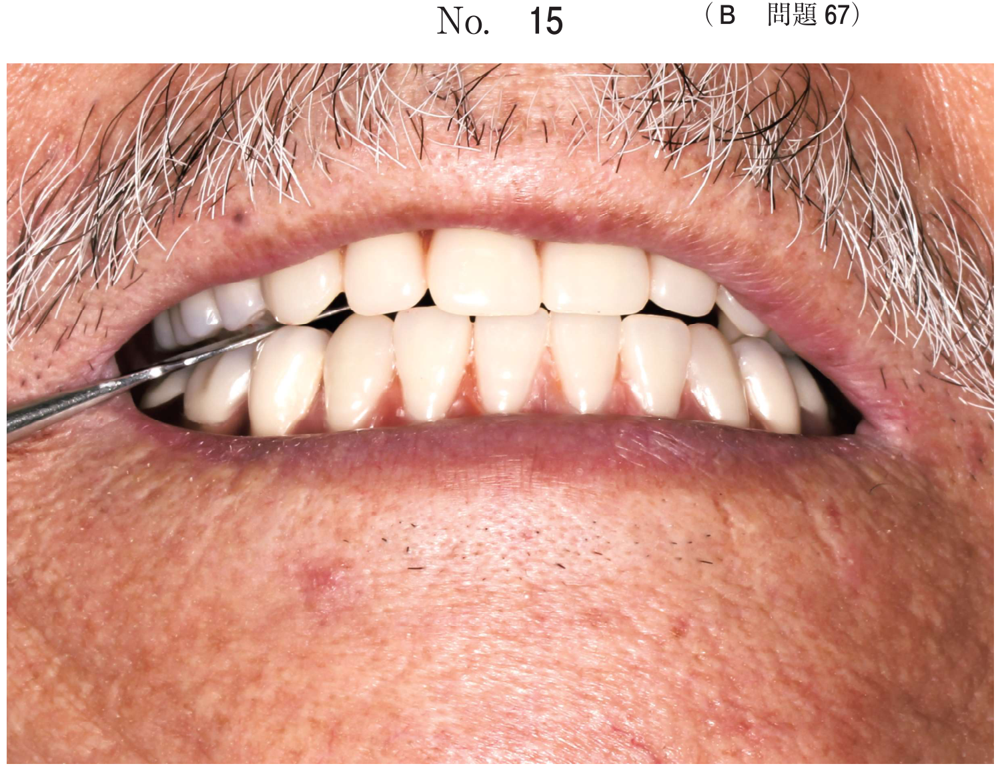
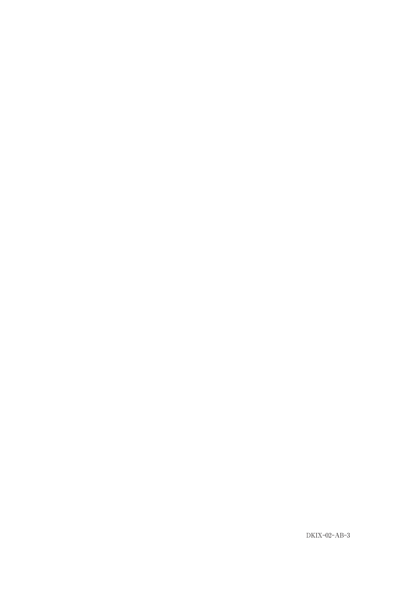
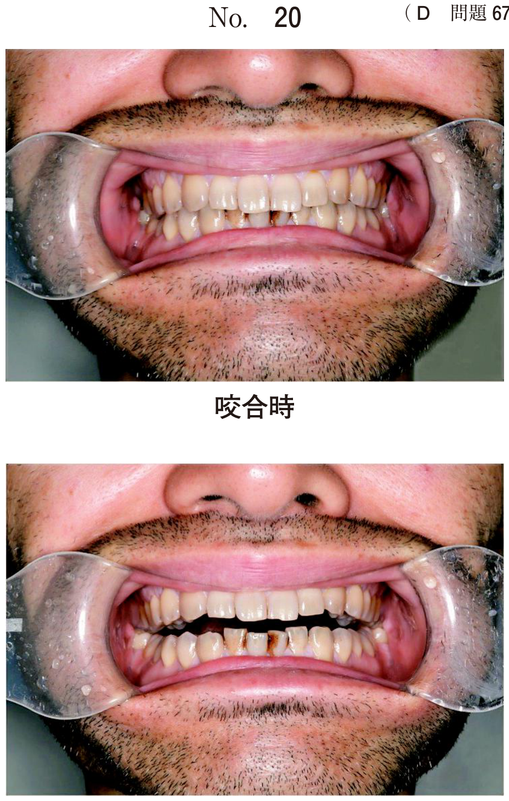

唇顎口蓋裂
唇顎口蓋裂とは
口唇、歯槽部（顎）、口蓋に生じる先天性の裂。発生頻度は約500人に1人。
分類
| 種類 | 部位 |
|---|---|
| 口唇裂 | 口唇のみ |
| 唇顎裂 | 口唇＋歯槽部 |
| 唇顎口蓋裂 | 口唇＋歯槽部＋口蓋 |
| 口蓋裂 | 口蓋のみ |
不正咬合の特徴
- 反対咬合（上顎劣成長による）
- 狭窄歯列弓
- 上顎側切歯の欠如・形態異常
- 交叉咬合
治療の流れ
| 時期 | 治療内容 |
|---|---|
| 出生直後 | Hotz床（哺乳補助、顎発育誘導） |
| 生後3〜6ヶ月 | 口唇形成術 |
| 1歳6ヶ月頃 | 口蓋形成術 |
| 8〜11歳頃 | 顎裂部骨移植（犬歯萌出前） |
| 混合歯列期〜 | 矯正治療 |
Hotz床（ホッツ床）
- 出生直後から装着
- 哺乳の補助（吸綴力向上）
- 顎発育の誘導
- 舌の裂への侵入防止
顎裂部骨移植
- 時期：犬歯萌出前（8〜11歳頃）
- 目的：犬歯の萌出経路確保、歯槽骨の連続性回復
- 骨採取部位：腸骨（海綿骨）
矯正治療の方針
- 上顎歯列の側方拡大（狭窄歯列弓の改善）
- 上顎前歯の唇側傾斜（反対咬合の改善）
- 顎裂部骨移植後に本格矯正
※重度の上顎劣成長では外科的矯正治療（Le Fort I型骨切り術など）を併用
過去問
反対咬合を特徴とするのはどれか。2つ選べ。
b Crouzon 症候群
c Goldenhar 症候群
d Robin シークエンス
e Treacher Collins 症候群
【解説】唇顎口蓋裂とCrouzon症候群は上顎劣成長により反対咬合を呈する。Robin・Treacher Collinsは下顎劣成長で上顎前突を呈する。
7歳の男児。前歯の歯並びが悪いことを主訴として来院した。口唇裂と口蓋裂に対する手術の既往がある。初診時の顔面写真（別冊No.22A）、口腔内写真（別冊No.22B）、エックス線画像（別冊No.22C）及び歯科用コーンビーム CT（別冊No.22D）を別に示す。セファロ分析の結果を図に示す。
まず行うのはどれか。2つ選べ。


b 上顎歯列の側方拡大
c 上顎前歯の唇側傾斜
d 下顎骨の前方成長抑制
e 上顎骨の前方成長促進
【解説】唇顎口蓋裂患者の矯正治療では、まず上顎歯列の側方拡大（狭窄歯列弓の改善）と上顎前歯の唇側傾斜（反対咬合の改善）を行う。顎裂部骨移植は拡大後に行う。
8歳の女児。反対咬合を主訴として来院した。出生時に先天性疾患の診断を受けている。初診時の口腔内写真（別冊No.3A）、下顎後退位の口腔内写真（別冊No.3B）及びエックス線画像（別冊No.3C）を別に示す。セファロ分析の結果を図に示す。
適切な治療方針はどれか。2つ選べ。


b 上顎切歯の唇側移動
c 下顎切歯の舌側移動
d 上顎骨の前方成長促進
e 下顎歯列弓の側方拡大
【解説】唇顎口蓋裂患者で顎裂がある場合、顎裂部骨移植と上顎切歯の唇側移動（反対咬合の改善）が適切。下顎の拡大や舌側移動は不要。
8歳の女児。前歯の歯並びが悪いことを主訴として来院した。生後5か月時に口唇形成術を受けている。初診時の顔面写真（別冊No.30A）、口腔内写真（別冊No.30B）及びエックス線画像（別冊No.30C）を別に示す。セファロ分析の結果を図に示す。
正しい所見はどれか。2つ選べ。


b 骨格性Ⅲ級
c ハイアングル
d 臼歯部交叉咬合
e 上顎左側側切歯の欠如
【解説】口唇形成術の既往と口腔内所見から唇顎裂と診断。唇顎口蓋裂では上顎側切歯の欠如が高頻度で認められる。